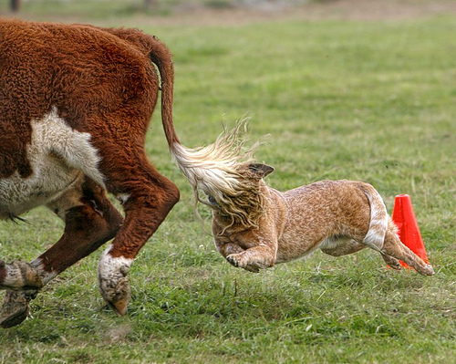

Speech Synthesis Quality - User Study
This is a question sheet for evaluating the speech synthesis performance of multi-modal TTS system.
You will listen multiple speech samples and rate the scores from 1 to 5 in a 0.5 scale.
Please leave the answer (scores) in the following answer sheet
Answer Sheet link:
< Naturalness and Face Matching Degree >
In this section, you will rate the given samples based on the following criteria
The rating criteria are twofold.
1) Naturalness: How naturally the generated speech sounds (i.e., how similar it is to human speech).
2) Face Matching Degree: How well the generated voice matches the given face image.
(In your experience, how likely is it that the voice belongs to the person in the face image?)
Score description - 1: BAD, 2: POOR, 3: FAIR, 4: GOOD, 5: EXCELLENT (in 0.5 scale)
| Question Number | Face Image | Generated Speech |
|---|---|---|
 |
<Samples from the Flickr8k captioning dataset>
| Image ID | Image | Ours | Ours (Image Unit) |
|---|---|---|---|
| 7254 |  |
Generated Speech: |
Generated Speech: |
| ASR Transcription: a person running together in the snow |
ASR Transcription: a person snow boarding on a snowy surface |
||
| 7428 |  |
Generated Speech: |
Generated Speech: |
| ASR Transcription: a black and brown dog walking on a long tree branch in the water |
ASR Transcription: a man is walking on a bench in the water |
||
| 7495 |  |
Generated Speech: |
Generated Speech: |
| ASR Transcription: a girl is riding on a slide slide in a park |
ASR Transcription: a baker sitting on a city street |
||
| 7505 |  |
Generated Speech: |
Generated Speech: |
| ASR Transcription: a woman plays with a child on a ladder |
ASR Transcription: a boy bounces on the ground and a white shirt |
||
| 7567 |  | Generated Speech: |
Generated Speech: |
| ASR Transcription: a brown and white cow jumping in a grassy field |
ASR Transcription: a brown and white cow and a brown dog is grazing on a field |
||
| 7572 |  |
Generated Speech: |
Generated Speech: |
| ASR Transcription: a woman lying on a couch lying on a couch |
ASR Transcription: a cat sitting on a couch bed with a stuffed animal on it |
||
| 7735 |  |
Generated Speech: |
Generated Speech: |
| ASR Transcription: two people riding on a motorcycle down the road |
ASR Transcription: two people riding motorcycle down a road |
||
| 7789 | Generated Speech: |
Generated Speech: |
|
| ASR Transcription: a man in a boat is rowing on a boat |
ASR Transcription: a boat is in the water on a body of water |
||
| 7808 |  |
Generated Speech: |
Generated Speech: |
| ASR Transcription: a black and white cow standing next to a car |
ASR Transcription: a black cow with a cow and a cow on a dirt road |
||
| 7824 |  |
Generated Speech: |
Generated Speech: |
| ASR Transcription: a brown dog rolling in a grassy field |
ASR Transcription: a brown dog is lying on the grass |
||
| 7874 |  |
Generated Speech: |
Generated Speech: |
| ASR Transcription: a boy wearing a blue back red collar |
ASR Transcription: a boy wearing a black and white uniform wearing attire in attire |
||
| 7892 | Generated Speech: |
Generated Speech: |
|
| ASR Transcription: a boat that is on a boat in the water |
ASR Transcription: a boat that is posing for a picture |
||
| 7962 |  |
Generated Speech: |
Generated Speech: |
| ASR Transcription: two children play in a lake |
ASR Transcription: two young men are standing in the grass in the grass |
||
| 7988 |  |
Generated Speech: |
Generated Speech: |
| ASR Transcription: a person standing next to a dog on a snowy slope |
ASR Transcription: a person posing for a picture on skis |
||
| 7999 | Generated Speech: |
Generated Speech: |
|
| ASR Transcription: a dog is playing with a tennis ball in his hand |
ASR Transcription: a black and white dog jumping op to catch a tennis ball |